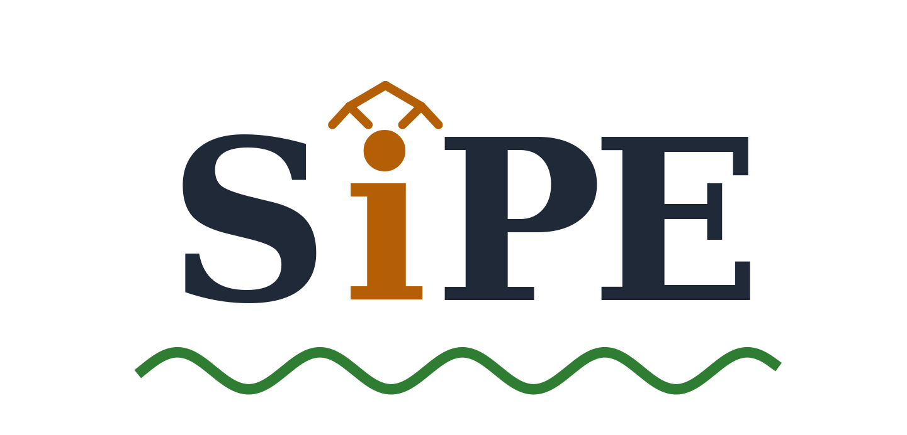
Suppose you hand an AI agent this request:
Acting on this sentence means connecting move to file and to folder. The parse gives those connections away for free. A Transformer’s positional embeddings — which tell the model where each token sits — do not. Absolute positions say that move is token 2 and folder is token 8. Relative positions say the two are six tokens apart — a distance at which attention has already begun to fade, even though a single arc joins the words. Positional encodings of every flavor measure where tokens are. None of them says how tokens relate.
Work that feeds this missing structure into language models sits at two extremes. Joint syntactic LMs (Transformer Grammars, Pushdown Layers, PLM) model the sentence and its tree together — syntactically strong, but to score a plain sentence they have to sum its probability over hundreds of candidate trees, because the model never sees a sentence without one. Parser-free methods (TreeReg, Tree-Planted Transformers) use trees only as a training signal and throw the parser away afterwards — cheap at inference, but they also lose some syntactic ability along the way:
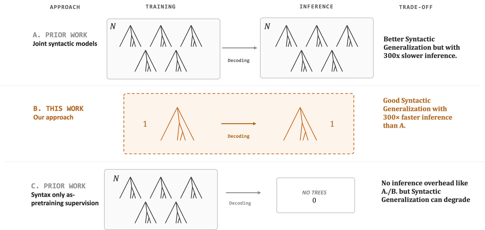
Our paper, SiPE (Syntax-informed Positional Embeddings), stakes out that middle: a prior built from a single dependency parse, injected into the model’s positional pathway. Measured on syntactic generalization, the middle point sits on the Pareto frontier:
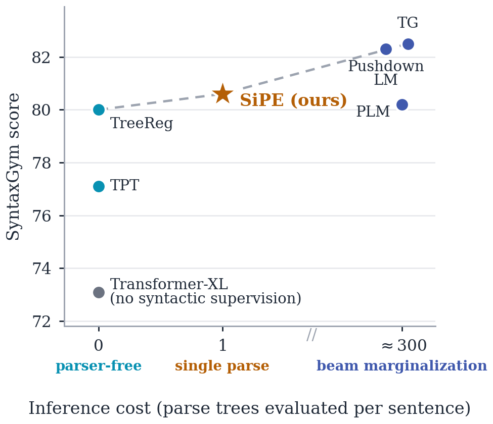
The headline numbers, all relative to a matched baseline with no syntactic supervision: +10.3% SyntaxGym, −9.0% perplexity (a metric nearly every prior syntax-injection method makes worse), and +8.2% on GLUE. The rest of this post walks through how the prior is built, where it should enter the Transformer, and what it does once inside.
A tree is an awkward object to feed a Transformer, which wants a flat sequence. Hexatagging (Amini, Liu & Cotterell, 2023) solves this: first convert the dependency tree into a binary head tree (BHT) — a version of the tree where every internal node has exactly two children, one of which carries the “head” (the more important word) — then read the whole tree back off as a short tag on each word. The name is literal: hexatagging needs exactly six tag types.
| Tag | Vocabulary | What it says, in plain terms |
|---|---|---|
| τ ∈ { ↗ , ↖ } | terminal (2) | is this word a left child (↗) or a right child (↖) of its parent in the tree? — i.e., does it attach to the left or to the right, like the arrows you hovered over above |
| ν ∈ { ⇗R, ⇗L, ⇖R, ⇖L } | non-terminal (4) | for each internal node of the binary head tree: is the node a left (⇗) or right (⇖) child, and does its head come from its right or left subtree? |
| ν = EOS | non-terminal (+1) | an end-of-sequence tag. Aligning tree tags with words requires shifting them one position left, which leaves one slot at the end — the seventh and final value. |
So each word carries a pair (τ, ν), with 2 possible values for τ and 4 + 1 = 5 for ν. Two small lookup tables — Eτ (2×D) and Eν (5×D), about 7·D parameters in total, well under 0.01% of the model — turn the tags into vectors the model can add to its own. Hover the paper’s running example:
One thing to be clear about before going further: every sequence the model ever sees is hexatagged first — during pretraining, during fine-tuning, and at inference. A fast parser runs once over the input, and from then on the tags are simply extra inputs riding along with the tokens. (This is the single parse on the x-axis of the Pareto figure above.)
Two details matter. The tags attach only to each word’s first subword (tokenizers often split one word into several pieces; only the first piece gets the tags), so a word contributes one tag signal no matter how it is split. And the tag tables are trained with an auxiliary tag-prediction loss alongside the usual language-modeling objective. What that objective looks like differs between encoders and decoders:
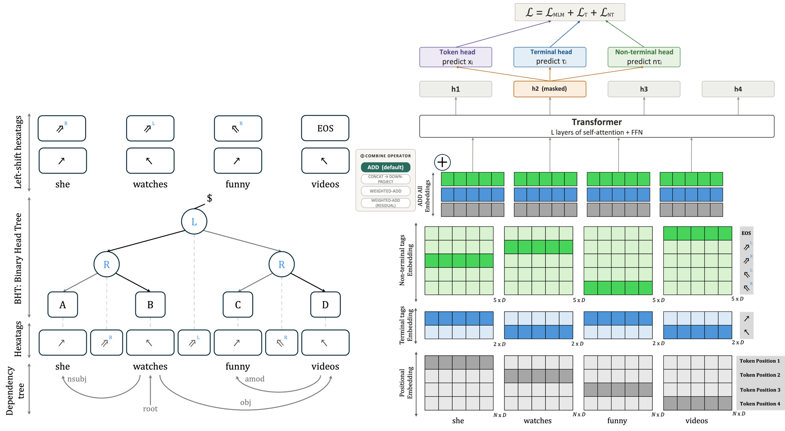
To decide where the tags should enter, it helps to see where position enters. Our decoder experiments use Transformer-XL — one of the earliest LLM-like architectures. An odd choice, you might say, in the RoPE era; as you’ll see in §8, it aged better than it looks. We switch off much of what made it “-XL” — the segment-level recurrence and memory — leaving a purely causal, autoregressive decoder. What remains is the part we care about: its relative positional encoding.
In a Transformer, every token computes an attention score against every other token — the number that decides how much token i “looks at” token j. In Transformer-XL that score splits cleanly into two pieces:
The AC piece asks “how much does my content match yours?” — the ordinary query·key product. The BD piece asks “how much do I care about your distance from me?”:
— the query compared, by inner product, against a learned vector for the relative distance i−j. Computing this naively is expensive: Shaw et al. (2018), who introduced relative positions, built a separate distance vector for every (query, key) pair — a tensor that grows as O(L²D) with sequence length. The Music Transformer noticed you never need that tensor: multiply the queries against the distance-embedding table once, then skew the result — pad, reshape, slice — so each entry lands at its correct relative distance. That is the “coefficients trick”:
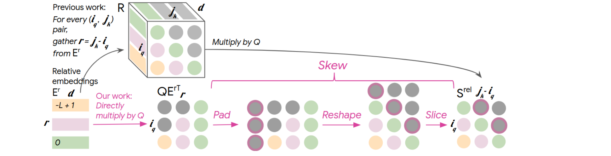
This lineage runs through Transformer-XL and DeBERTa, and it has two properties worth underlining. Unlike T5’s relative bias — a fixed number per distance — BD is content-conditioned: each query gets to weigh each distance differently. And unlike RoPE, which rotates queries and keys by fixed angles, this pathway is a learned channel whose meaning training gets to choose. It also spent years out of fashion — enough that when a frontier model shipped with it in 2026, a large part of the community re-discovered the trick in real time (more on that in §8).
That is the observation SiPE builds on. If the position pathway is already a learned, content-conditioned score — why should it only know about distance?
So we have a tiny syntactic vector for every word. Now the design question: a Transformer offers more doorways than you might think. The tag vector could be mixed into the token’s embedding before the model ever sees it. It could ride along the position term we just met. It could be added straight to the attention scores. Which door is the right one?
Here is the map. Tokens enter at the bottom; the attention score is assembled from the content term and the position term; the result flows up. Each colored arrow is one place the hexatag prior can enter — click a pathway to see its equation and how it does on Transformer-XL:
That is the “where”. There is also a “how”: once you pick a doorway, how do you merge the tag vector with the vector already living there? To study this question in isolation, we wanted the model with the least going on around the injection point — so we ran the sweep on RoBERTa, the simplest of our encoders, whose absolute positional embeddings are just added to the input with nothing positional inside the attention layers. Numbers are averages over the eight GLUE tasks; the no-tag baseline scores 72.30:
Just sum the vectors. Nothing beyond the shared tag tables.
Glue the vectors side by side, then learn a matrix to squeeze them back to size.
Let a learned dial α trade off token vs. tags. Best of three initializations shown.
Add the tags on the residual branch, so attention itself never sees them directly.
Plain addition wins. All four variants share the same 7·D tag tables; addition asks for nothing on top of them — no projection matrix, no learned dial — and none of the cleverer mechanisms beat it.
Sweeping the entry points produces an equally clean ordering — and it is not the same for encoders and decoders:
Encoders (RoBERTa, DeBERTa-v3, ModernBERT): just add the tag vectors to the input embedding. The prior composes with whatever positional scheme the encoder already uses — absolute, relative, or rotary — and this simple recipe beats fancier ones downstream. The picture below shows why it is the same recipe three times: the green addition happens at the input in all three models, no matter where each model keeps its positional mechanism:
Decoders with relative PE (Transformer-XL): the input pathway is the weakest option. Syntax helps progressively more as it entangles with position: input-side < disentangled additive < multiplicative coupling. And injecting the same signal twice — positional pathway and attention bias — scores below either used alone.
The winning decoder variant deserves its own section. We first build a syntactic twin of the BD term — the same query, compared against a projection of the key’s tag instead of a distance vector:
One query, two questions: “how much do I care about your distance?” (BD) and “how much do I care about your syntactic role?” (c). Then, instead of adding c to the score, we let it rescale the position term:
Drag the sliders to see how this behaves differently from adding the same quantity:
Empirically this ordering is robust: the multiplicative form reaches SyntaxGym 80.60 (vs. 73.09 baseline) while cutting perplexity 18.63 → 16.95; the disentangled additive form lands at 78.72; input-side injection at 76.97. Syntax helps most when it sharpens a positional preference the model already has, rather than pushing on every pair uniformly.
Three claims.
First, the prior carries over to ordinary language understanding. GLUE is not a grammar benchmark — it is a standard suite of eight everyday tasks: sentiment, paraphrase, entailment, similarity. When we fine-tune the SiPE-pretrained models on it, the decoder’s task average rises from 68.17 to 73.78, a +8.2% relative gain, and the improvement holds up under scrutiny: it is not driven by one or two lucky tasks. The decoder improves on all eight, and each encoder improves on most of them, across all three positional-encoding families:
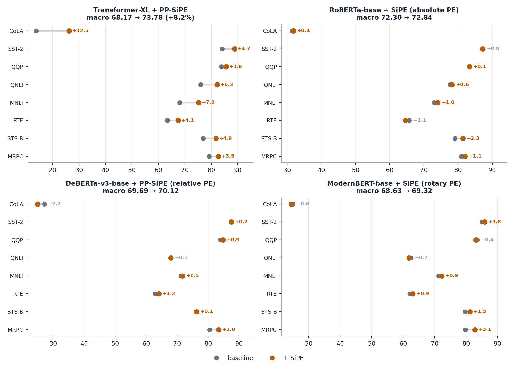
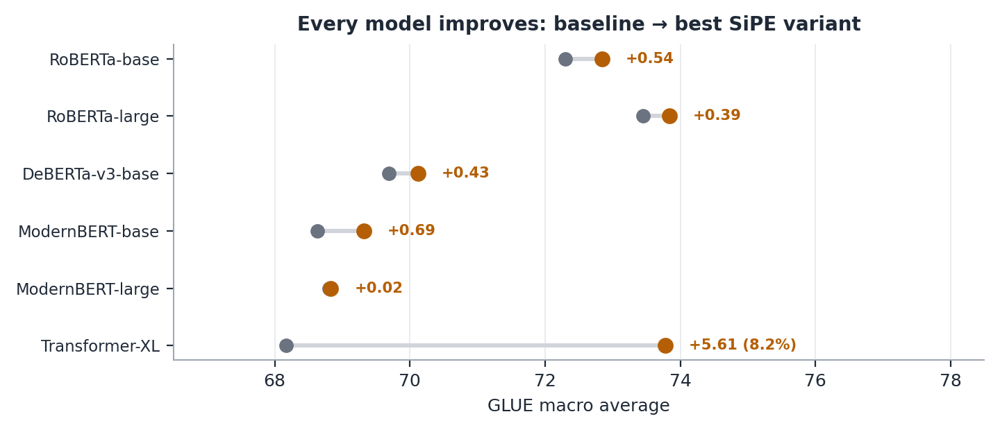
Second, simplest fusion wins — the full version of the sweep from §3, now including variants that use the fine-grained 40-label dependency-relation inventory instead of our two coarse tags. The richer signal from full dependency-relation labels does not help over the plain terminal and non-terminal tags:
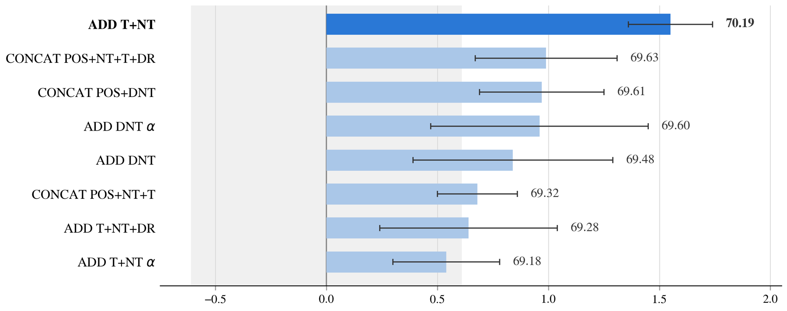
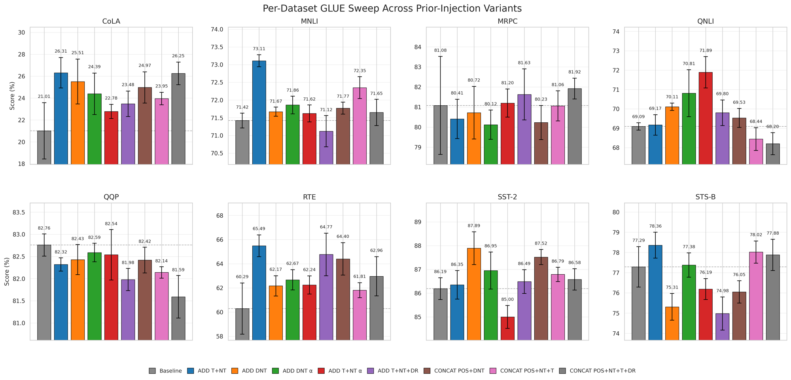
Third, perplexity improves rather than degrades. Most syntax-injection methods trade language-modeling quality for syntactic ability: TreeReg reaches perplexity 22.30 and the TPT variants 45–48, against our baseline’s 18.63. SiPE’s multiplicative variant lowers perplexity to 16.95 while matching or beating the parser-free methods on syntactic generalization — this is the Pareto scatter at the top of the post.
A natural follow-up: which layers should receive the prior? We sweep contiguous layer suffixes of Transformer-XL — injecting into layers ℓ…16 for every choice of ℓ — and injecting from the very first layer wins:
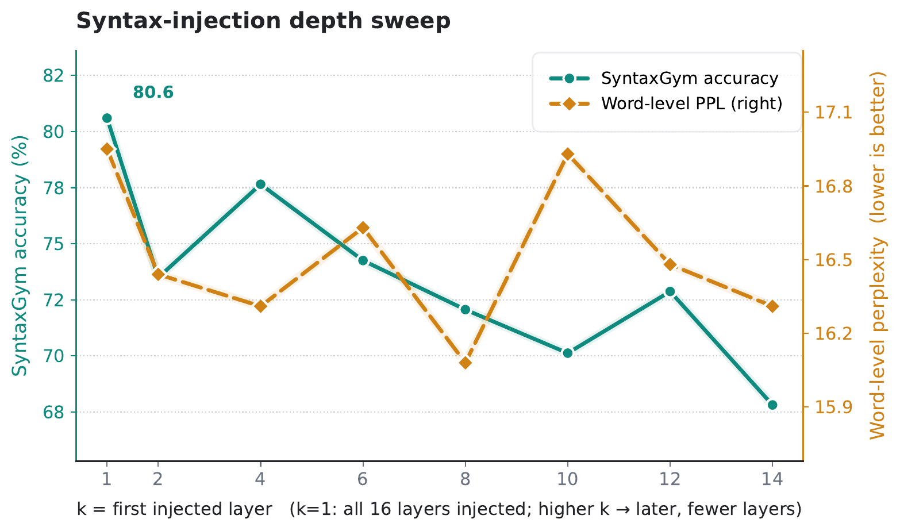
Does the prior actually change what the model looks at, or just nudge its outputs? We took grammar-test sentence pairs (BLiMP causatives) where the SiPE model answers correctly and the baseline doesn’t, and measured how much attention the verb pays to its object:
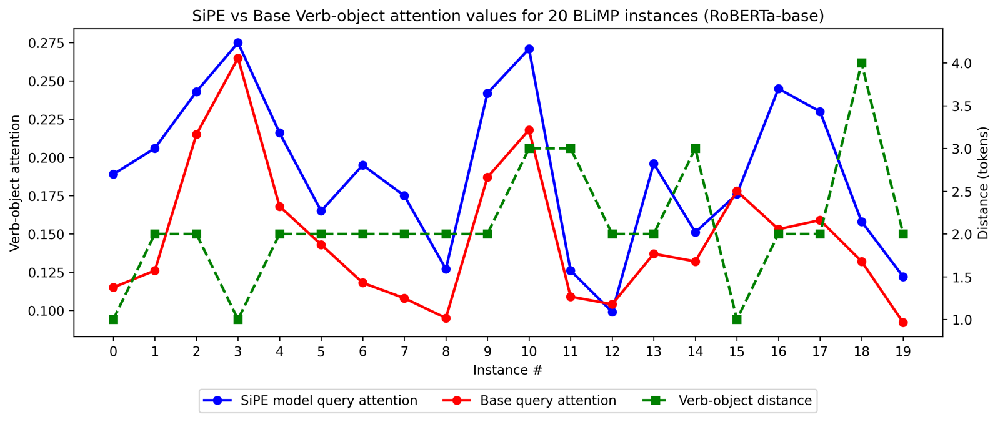
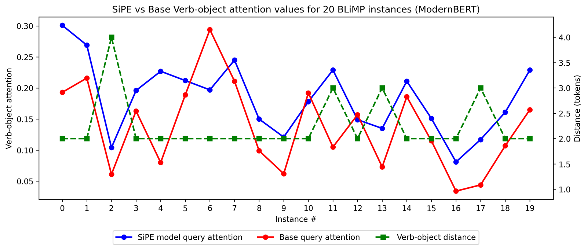
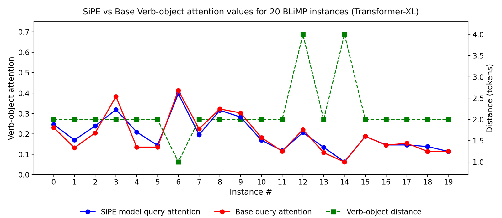
We chose Transformer-XL for the decoder experiments for a concrete reason: its relative positional encoding exposes position as an explicit, learned term in the attention score — the BD term of §2 — which is precisely the kind of pathway a positional prior can attach to. (It is also the standard backbone in the syntactic-LM literature we compare against.) Still, building on a 2019 architecture instead of a RoPE-based one meant betting that this style of positional encoding remains relevant. Then, concurrent with our work, Thinking Machines Lab released Inkling — a 975-billion-parameter open-weights mixture-of-experts model (41B active per token, 1M-token context) — and its positional choice settled that bet:
“We find that encoding position with a relative positional embedding performs better and extrapolates better to longer sequences than the more widely adopted Rotary Positional Embedding (RoPE).”
And it’s not the static per-distance bias of T5. In Inkling’s implementation, each token’s hidden state is projected into a small vector whose inner product with a learned per-distance embedding is added to the attention scores — a content × position interaction of exactly the BD form from §2, computed with the same coefficients trick. A frontier lab looked at the same design space and, independently, picked relative positional embeddings for a trillion-parameter model — the release that sent the community back to the 2018 papers.
The two designs were built independently, at very different scales, and for different purposes — but they rhyme in ways worth spelling out:
Either way, the larger point stands on its own: the positional pathway is not a solved, frozen part of the architecture. It is a learned channel, it responds to content, and — our results suggest — it responds to structure.
The biggest open problem is fast text generation. SiPE conditions on hexatags, and generating a new token in principle requires re-tagging the sentence so far; the parser is fast, but tags of earlier words can change as the sentence grows, which invalidates the cached keys and values that make modern decoding fast. Efficient incremental decoding under a per-step syntactic prior is the direction we care most about next. Our experiments are also bounded by an academic compute budget — small models, English, WikiText/BLLIP-scale pretraining — and our reported perplexity is conditioned on the single parse (that is the trade-off the Pareto figure makes explicit).
🚧 Code, hexatagged training data, and pretrained checkpoints will be released upon acceptance — enough, we hope, for someone with more GPUs than us to try SiPE at frontier scale. Watch hriaz17/SiPE.
If you found this work helpful, please cite it as:
@misc{riaz2026sequenceordersyntaxinformedpositional,
title={Beyond Sequence Order: Syntax-Informed Positional Embeddings for Transformers},
author={Haris Riaz and Hyungji Kim and Mihai Surdeanu},
year={2026},
eprint={2608.06111},
archivePrefix={arXiv},
primaryClass={cs.CL},
url={https://arxiv.org/abs/2608.06111},
}